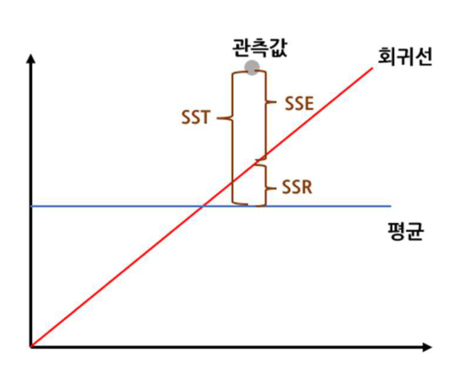
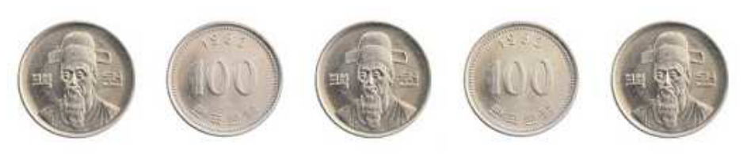
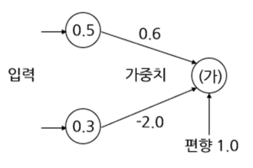
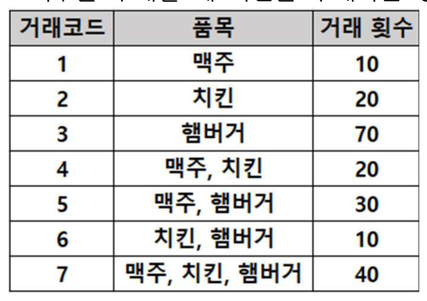
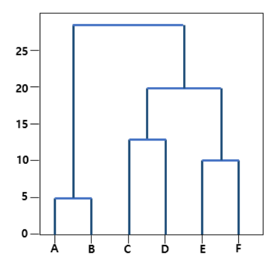
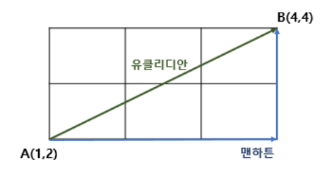
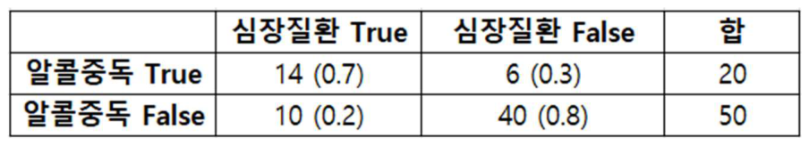
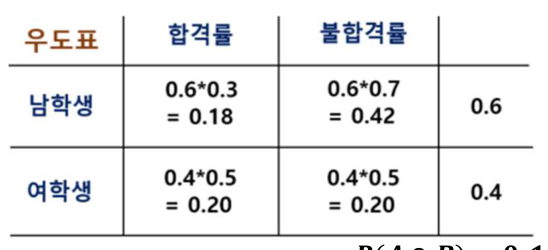

3과목 빅데이터 모델링
분석기법 적용
원문 41~54쪽 (14쪽)
1. 분석기법
회귀분석
회귀분석
- (1) 개념 : 독립변수들이 종속변수에 영향을 미치는 파악하는 분석방법
- 1) 독립변수 : 원인을 나타내는 변수 (x)
- 2) 종속변수 : 결과를 나타내는 변수 (y)
- 3) 잔차(오차) : 계산값과 예측값의 차이
- (2) 회귀계수 추정방법
최소제곱법(=최소자승법) : 잔차의 제곱합(SSE)이 최소가 되는 회귀계수와 절편을 구하는 방법
- (3) 회귀모형 평가
R-square : 총 변동 중에서 회귀모형에 의하여 설명되는 변동이 차지하는 비율 (0 ~ 1 )

SST, SSE, SSR
- (1) SST : 전체의 변동
- (2) SSE : 모형에 의해 설명되지 않는 변동
- (3) SSR : 모형에 의해 설명되는 변동
(4) R2 = SSR/SST = 1 − SSE/SST
SST : Sum of Squares Total / SSR : Sum of Squares Regression / SSE : Sum of Squares Error
회귀분석 종류
- (1) 단순회귀 : 1 개의 독립변수와 종속변수의 선형관계
- (2)
다중회귀 : 2 개 이상의 독립변수와 종속변수의 선형관계 - (3)
다항회귀 : 독립변수와 종속변수가 2 차 함수 이상의 관계 - (4)
규제항이 포함된 회귀
- 릿지회귀(L2 규제) : L2 규제항을 포함 λ Σβ2
- 라쏘회귀(L1 규제) : L1 규제항을 포함 λ Σ|β|
- 엘라스틱넷 : L1 과 L2 를 동시에 규제
(5) 교호항이 포함된 회귀 : 독립변수들의 교호작용(X1 × X2)이 포함된 회귀 모형
선형회귀분석의 가정
- (1) 선형성 : 종속변수와 독립변수는 선형관계
- (2) 등분산성 : 오차의 분산이 고르게 분포
- (3) 정규성 : 오차가 정규분포의 특성을 지님
- (4) 독립성 : 오차가 서로 독립
‘선분정독’
회귀 모형의 구축
- (1) 구축절차
- 독립/종속변수의 설정 → 회귀 계수 추정 → 회귀 계수들의 유의성 검정 → 모형의 유의성 검정
- (2) 회귀 모형의 검정
- 1) 회귀계수들이 유의미한가 : 회귀계수들의
t검정 - 2) 모형이 통계적으로 유의미한가 : 모형에 대한
F검정
다중공선성 문제
- 독립변수들간 강한 상관관계가 나타나는 문제
- (1) 진단 방법
- 변수간 상관계수 절댓값이 0.8 이상이면 의심 E
−
- 조건수가 30이상이면 의심
- (2) 해결방안 : 독립변수 제거, 차원 축소, 변수 선택, 규제항이 포함된 회귀
최적의 회귀 방정식 탐색 방법
- (1) 전진선택법 : 변수를 하나씩 추가하면서 최적의 회귀방정식을 찾아내는 방법
- (2) 후진제거법 : 변수를 하나씩 제거하면서 최적의 회귀방정식을 찾아내는 방법
- (3) 단계별 선택법 : 전진선택법 + 후진제거법으로 변수를 추가할 할 때 벌점을 고려
- 1) AIC (아카이케 정보 기준) : 편향과 분산이 최적화 되는 지점 탐색, 자료가 많을수록 부정확
- 2) BIC (베이즈 정보 기준) : AIC를 보완했지만 AIC보다 큰 패널티를 가지는 단점
- 3) Mallow’s Cp : SSE(잔차 제곱합)을 활용한 판단
AIC와 BIC 모두 작을수록 좋음
로지스틱 회귀분석
로지스틱 회귀분석
- 종속변수가
범주형 데이터 를 대상으로 성공과 실패 2개의 집단을 분류하는 문제에 활용
- (1) 로지스틱 회귀분석의 원리
- 1) 오즈(Odds)
- 성공할 확률과 실패할 확률의 비
- 2) 로짓(logit)변환
- 오즈에 자연로그(자연상수 e가 밑)를 취하여 선형 관계로 변환 V
- 3) 시그모이드 함수
- 로짓 함수의 역함수를 통하여, 0~1사이 확률을 도출하는 함수 E
로지스틱 회귀분석의 검정
- (1) 회귀계수 추정 :
최대우도법 - (2) 모형전체 검정 : 우도비검정(카이제곱검정)
의사결정나무
의사결정나무(Decision Tree)
노드 내 동질성이 커지고, 노드 간 이질성이 커지는 방향 으로 분리하는 트리 구조 모델
- (1) 특징
- 화이트 박스 모델,
높은 과적합 위험
과적합 방지 방안
정지규칙 : 분리를 더 이상 수행하지 않고 나무의 성장을 멈춤가지치기 : 일부 가지를 제거하여 과적합을 방지
노드 분할 방법
- (1) 분류(범주형)에서의 분할 방법
- CART 알고리즘 : 지니지수 활용 ( 1 − Σ P2 )
- CHAID 알고리즘 : 카이제곱 통계량
− C4.5/C5.0 알고리즘 : 엔트로피지수 활용 ( − Σ P(log2 P) )
- (2) 회귀(연속형)에서의 분할 방법
- CHAID 알고리즘 : ANOVA, F-통계량
- CART 알고리즘 : 분산감소량

G '
- 앞면 확률 =
1. 선형회귀분석의 가정에 해당하지 않는 것은?
정답 ④ — 선형회귀분석의 가정은 선형성, 등분산성, 정규성, 독립성이다(암기법 ‘선분정독’). 다중공선성은 오히려 피해야 할 문제다.2. 다중공선성의 진단 방법으로 옳지 않은 것은?
정답 ④ — 다중공선성 진단은 상관계수 절댓값 0.8 이상, VIF 10 이상, 조건수 30 이상으로 판단한다. 결정계수는 진단 기준으로 제시되지 않는다.3. 규제항이 포함된 회귀에 대한 설명으로 옳은 것은?
정답 ③ — 릿지회귀는 L2 규제(계수 제곱합), 라쏘회귀는 L1 규제(계수 절댓값 합), 엘라스틱넷은 두 규제를 동시에 적용한다.4. 로지스틱 회귀분석에 대한 설명으로 옳지 않은 것은?
정답 ③ — 로지스틱 회귀의 회귀계수 추정에는 최대우도법을 사용한다. 최소제곱법은 선형회귀의 회귀계수 추정 방법이다.5. 의사결정나무의 분할 기준 연결이 옳지 않은 것은?
정답 ④ — 회귀에서 CART는 분산감소량을, CHAID는 ANOVA·F-통계량을 사용한다.
인공신경망
퍼셉트론의 등장과 한계
- 인간의 뉴런을 모방한 단층 퍼셉트론의 등장,
XOR 문제 해결의 불가 퍼셉트론 구조에서 출력 값 계산

− (가) 퍼셉트론의 출력 : W1X1 + W2X2 + b = (0.6) × (0.5) + (−2.0) × (0.3) + (1.0) = 0.7
가중치는 각 퍼셉트론 간의 연결 강도를 의미
다층 퍼셉트론의 등장
- 입력층과 출력층 사이에 하나 이상의 은닉층을 삽입한 구조
- (1) 활성함수의 사용 : 시그모이드 함수를 통한 비선형 문제 해결
- (2) 인공신경망의 특징
- 블랙박스 모델
- 은닉층 수와 노드 수는
사용자가 직접 설정하는 하이퍼파라미터 - 은닉층 수가 많아지면 복잡한 문제 해결 가능하지만,
과적합 위험 증가 - 은닉층 수가 적어지면 복잡한 패턴 학습 못해
과소적합 가능성
인공신경망 학습 방법
- (1) 순전파(피드포워드) : 정보가 전방으로 전달
- (2)
역전파 알고리즘 : 가중치를 수정하여손실함수 의 값을 줄임 (합성함수의 곱 활용) - (3) 경사하강법
- 경사의 내리막길로 이동하여 오차가 최소가 되는 최적의 해를 찾는 기법 (편미분 활용)
- (4)
기울기 소실 문제 : 다수의 은닉층에서시그모이드 함수 사용 시, 학습이 제대로 되지 않는 문제
활성함수와 손실함수
- (1) 은닉층에서의 활성함수 : 인공신경망의 선형성을 극복
- 시그모이드 함수 : 0 ~ 1 사이의 확률 값
- 하이퍼볼릭 탄젠트(Tanh) 함수 : -
1 ~ 1 사이 값 , 시그모이드 함수의 기울기 소실문제를 지연
− ReLU 함수 :
- (2) 출력층에서의 활성함수 E
− 시그모이드 함수 : 이진분류 모델, 0~1 사이 확률, 로지스틱 함수와 유사 ( σ = 1 / (1 + e−x) )
− 소프트맥스 함수 : 다중분류 모델, 확률의 총합이 1 ( σxk = exk / Σ exi )
- (3) 손실함수 : 예측값과 실제값의 차이를 측정하는 함수
- MSE(Mean Square Error) : 회귀 모델
- 이진 크로스 엔트로피(Binary Cross-Entropy) : 이진 분류 모델
- 크로스 엔트로피(Cross-Entropy) : 다중 분류 모델
인공신경망의 과적합 방지방안
- (1) 규제 :
라쏘(L1) 규제, 릿지(L2) 규제 - (2)
드롭아웃(Dropout) : 일부 퍼셉트론을 비활성화시켜 학습 - (3) 조기종료 : 특정 지점에서 학습 미리 종료
- (4) 모델의 복잡도 줄이기 : 은닉층의 퍼셉트론 수 감소
- (5) 데이터 증강 : 데이터에 변형을 주어 데이터 수 증가
- (6) 배치정규화 : 각 출력마다 정규화
서포트벡터머신
서포트벡터머신(SVM)
- 마진이 최대가 되는 초평면을 찾아 선형이나 비선형
이진 분류 , 회귀에서 활용 가능한 다목적 모델
- (1) 하이퍼플레인(초평면) : 데이터를 구분하는 기준이 되는 경계,
가중치벡터와 편향으로 결정 - (2) 서포트벡터 : 클래스를 나누는 하이퍼플레인과 가까운 위치의 샘플
- (3) 마진 : 하이퍼플레인과 서포트벡터 사이의 거리
- (4)
커널함수 : 저차원 데이터를 고차원 데이터로 변경하는 함수
서포트벡터머신(SVM)의 유형
- (1) 하드마진분류 : 오류 비허용
- (2) 소프트마진분류 : 마진 내 어느 정도 오류 허용
연관성분석
연관분석
- 항목들간의 조건-결과로 이루어지는 패턴을 발견하는 기법 (
장바구니 분석 )
연관분석 특징
- 결과가 단순하고 분명 (IF~THEN~)
비목적성 분석 기법- 품목 수가 증가할수록
계산량이 기하급수적 으로 증가
연관 분석에 시간 개념을 추가하여 순차패턴분석을 수행
연관분석의 지표
- (1) 지지도 :
- A와 B 두 품목이 동시에 포함된 거래 비율
- (2) 신뢰도 :
- A 품목이 거래 될 때 B품목도 거래될 확률 (
조건부 확률 )
(3) 향상도 :
- A 품목과 B 품목의 상관성 (향상도 > 1 : 양의상관관계, 향상도 = 1 : 상관없음, 향상도 < 1 : 음의상관관계)
‘지신향’
맥주를 구매할 때 치킨을 구매하는 경우에 대한 신뢰도와 향상도 계산

- (1) 맥주의 구매 확률 = (10 + 20 + 30 + 40) / 200 = 0.5
- (2) 치킨의 구매 확률 = (20 + 20 + 10 + 40) / 200 = 0.45
- (3) 맥주와 치킨의 지지도 = (20 + 40) / 200 = 0.3
- (4) 맥주 → 치킨의
신뢰도 = 0.3 / 0.5 = 0.6 - (5) 맥주와 치킨의
향상도 = 0.3 / (0.5 * 0.45) = 1.33
- 맥주와 치킨의 향상도가 1보다 크므로
양의 상관관계 를 가짐
빈발항목 도출 알고리즘
- (1)
Apriori 알고리즘
- 최소 지지도를 만족하는 빈발 항목을 추출하여 연관규칙분석의 연산량을 줄이는 기법
- 절차 : 빈도수 집합 탐색 → 최소 지지도 확인 → 후보 집합 생성 → 반복 탐색 → 연관규칙 도출
- (2) FP-Growth 알고리즘
- Apriori 알고리즘의 반복 과정을 트리 기반으로 대체하여 연산 효율 향상
군집분석
군집분석
- 비지도 학습으로 데이터들 간 거리나 유사성을 기준으로 군집을 나누는 분석
- (1) 계층적 방법 : 데이터 간 유사성을 기준으로 군집을 형성
덴드로그램

- 거리를 15에서 나누면 3개의 클러스터, 25에서 나누면 2개의 클러스터로 나눌 수 있음
- (2) 비계층적 방법 : 계층적 방법 외 군집분석 기법
거리 측정 방식
- (1) 데이터 간 거리 측정 방식
- 1) 연속형 변수
- 유클리디안 거리 : 두 점 사이의 직선 거리
- 맨하튼 거리 : 각 변수들의 차이의 단순 합
- 체비셰프 거리 : 변수 거리 차 중 최댓값
− 민코우스키 거리 : 유클리드, 맨하튼 거리를
- 마할라노비스 거리 : 표준화 거리에서 변수의
상관관계를 고려 - 표준화 거리 : 변수의 스케일을 맞춘 뒤의 거리 계산
- 유클리디안 거리

- 맨하튼 거리
- 체비셰프 거리
- 2) 범주형 변수
- (2) 군집 간 거리 측정 방식
- 최단 연결법(=단일 연결법) : 군집간 가장 가까운 데이터
- 최장 연결법(=완전 연결법) : 군집간 가장 먼 데이터
- 평균 연결법 : 군집의 모든 데이터들의 평균
- 중심 연결법 : 두 군집의 중심
- 와드 연결법 : 두 군집의
편차 제곱합 이 최소가 되는 위치
K평균 군집화(K-means Clustering)
- 비계층적 군집화 방법으로
거리기반
- (1) 특징
- 군집의 수
K를 사전에 지정 - 한번 군집에 속한 데이터는
중심점이 변경되면 군집이 변할 수 있음 - 이상치나 초기 중심점 설정에 민감
- (2) 과정
- 1) 군집의 개수 K개 설정 (
Elbow Method를 활용 최적의 K 설정) - 2) 임의로 K개의 초기 중심점 설정
- 3) 데이터들을 가장 가까운 군집에 할당
- 4) 데이터의 평균으로 중심점 재설정
- 5) 중심점 위치가 변하지 않을 때까지 3), 4)번 과정 반복
- (3) K-means의 변형
- K-modes : 범주형 데이터인 경우 최빈값(mode) 활용
- K-medoids : 실제 데이터의 대표 값을 중심점으로 선정하여 이상치에 강건
DBSCAN
- 비계층적 군집화 방법으로
밀도기반
- (1) 특징
군집 수를 사전에 정하지 않아도 됨 - 노이즈와 이상치에 강함
- Eps와 MinPts를 사전에 설정
기타 비계층적 군집분석
- (1) 퍼지군집화 – 확률 기반
- 각 데이터가 특정 군집에 속할
확률 을 각각 계산해가며 군집화
- (2) EM알고리즘 – 분포 기반
- Likelihood의 기댓값을 계산하는
E단계 와 기댓값 최대화 추정값을 계산하는M단계 반복
- (3) 자기조직화지도(SOM) – 그래프 기반
신경망을 활용 하여 차원축소를 통해 지도로 형상화하여 군집화하는 방법완전연결 의 형태를 가지며,순전파 방식 만 사용- 각 노드가 승자가 되기 위한
경쟁 학습
1. 인공신경망의 활성함수에 대한 설명으로 옳지 않은 것은?
정답 ④ — 소프트맥스 함수는 다중분류 모델의 출력층에 사용하며 확률의 총합이 1이다. 이진분류에는 시그모이드 함수를 쓴다.2. 인공신경망의 과적합 방지방안에 해당하지 않는 것은?
정답 ④ — 은닉층 수가 많아지면 복잡한 문제 해결은 가능하지만 과적합 위험이 증가한다. 과적합 방지방안은 규제, 드롭아웃, 조기종료, 모델 복잡도 줄이기, 데이터 증강, 배치정규화다.3. 서포트벡터머신(SVM)의 구성 요소에 대한 설명으로 옳지 않은 것은?
정답 ② — 서포트벡터는 클래스를 나누는 하이퍼플레인과 가까운 위치의 샘플이다.4. 연관분석의 지표에 대한 설명으로 옳은 것은?
정답 ③ — 지지도는 동시 포함 거래 비율, 신뢰도는 조건부 확률, 향상도는 상관성을 나타내며 >1 양의 상관, =1 상관없음, <1 음의 상관이다.5. K평균 군집화(K-means)에 대한 설명으로 옳지 않은 것은?
정답 ③ — 한번 군집에 속한 데이터도 중심점이 변경되면 군집이 변할 수 있다.
2. 고급 분석기법
범주형 자료 분석
분할표(교차표)
- 여러 개의 범주형 변수를 기준으로 관측치를 기록하는 표

적합도, 독립성, 동질성 검정
- 카이제곱 검정을 활용하여, 관측빈도와 기대빈도의 차이를 검정
- (1) 적합도 검정 : 관측된 데이터가 특정 분포에 적합한지 검정
- (2) 독립성 검정 : 두 변수간 독립성 여부 검정
- (3) 동질성 검정 : 두 개 이상의 집단이 동일한 분포를 따르는지 검정
독립성 검정과 동질성 검정은 교차표를 활용
다변량 분석
공분산 분석
- (1)
분산분석(ANOVA) : 여러 집단의 평균을 비교하여, 차이가 통계적으로 유의미한지 확인
- 일원분산분석(One-Way ANOVA) : 하나의 요인과 여러 집단간의 분석
- 이원분산분석(Two-Way ANOVA) : 두 개의 요인과 여러 집단간의 분석
- (2)
다변량분산분석(MANOVA) : 다수의 요인과 여러 집단간의 분석
요인분석 (Factor Analysis)
- 집단 내 변수들을 상관관계를 분석하여 소수의 요인으로 축약하는 기법
- (1) 요인추출방법
주성분분석(PCA) : 전체 분산을 토대로 요인을 추출, 가장 많이 사용- 주축요인분석 : 공통 분산만을 토대로 요인을 추출
- 최소제곱요인분석 : 잔차를 최소화하여 요인을 추출
- (2) 요인회전
- 직각회전 :
VARIMAX , QUARTIMAX, EQUIMAX - 사각회전 : OBLIMIN, PROMAX
정준상관분석
- 두 개 이상의 변수 집단 간의 상관관계를 가장 잘 분석하는
선형결합을 찾아 분석 하는 기법
시계열 분석
시계열 분석
- 시간의 흐름에 따라 관찰된 자료의 특성을 파악하여 미래를 예측 (주가데이터, 기온데이터)
정상성
- 시계열 예측을 위해서는
모든 시점에 일정한 평균과 분산 을 가지는 정상성을 만족해야 함
- (1) 정상시계열로 변환 방법
- 1)
차분 : 현 시점의 자료를 이전 값으로 빼서 평균을 일정하게 만드는 방법 - 2) 변환 : 로그변환, 제곱근변환, Box-Cox 변환 등으로 분산을 안정화
평활화
- 슬라이딩 윈도우(Sliding Window)를 활용하여 시계열의 패턴을 파악
- 1) 이동평균법 : 일정 기간의 평균
- 2) 지수평활법 : 최근 시간 데이터에 가중치를 부여
백색 잡음
- 시계열 모형의 오차항을 의미 (평균 및 분산 일정, 자기상관 없음,
정상성 만족 ) - 평균이 0 이면 가우시안 백색잡음
시계열 모형
- (1) 자기회귀(AR) 모형
- 자기자신의 과거 값이 미래를 결정하는 모형
- 부분자기상관함수(
PACF )를 활용하여 p+1 시점부터 급격 감소하면 AR(p) 모형 선정
- (2) 이동평균(MA) 모형
- 이전 백색잡음들의 선형결합으로 표현되는 모형
- 자기상관함수(
ACF )를 활용하여 q+1 시점부터 급격히 감소하면 MA(q) 모형 선정
- (3) 자기회귀누적이동평균(ARIMA) 모형
- AR 모형과 MA 모형의 결합
ARIMA(p, d, q)
- 1) p 와 q 는 AR 모형과 MA 모형이 관련 있는 차수
- 2)
d 는 정상화시에 차분 몇 번 했는지 의미 - 3) d = 0 : ARMA 모델 / p = 0 : IMA 모델 / q = 0 : ARI 모델
계절성이 있는 경우 SARIMA 사용을 고려
분해시계열
- 시계열에 영향을 주는 일반적인 요인을 시계열에서 분리해 분석하는 방법
- (1) 추세 요인 : 장기적으로 증가, 감소하는 추세
- (2) 계절 요인 : 계절과 같이 고정된 주기에 따라 변화
- (3) 순환 요인 : 알려지지 않은 주기를 갖고 변화 (경제 전반, 특정 산업)
- (4) 불규칙 요인 : 위 3 가지로 설명 불가한 요인
‘추운 계절의 순환이 불규칙하다.’
베이지안 기법
베이즈 정리
A대학 입시에 응시한 남학생과 여학생의 비율이 60%와 40%이고 남학생의 합격률은 30%, 여학생의 합격률은 50%이다. 이때, A대학에 합격한 신입생 중 남학생을 고를 확률은?

나이브베이즈 분류
나이브(독립) + 베이즈 정리 를 기반으로 계산을 단순화하여 범주에 속할 확률 계산- 서로 독립적이라는 가정이 필요
1. 카이제곱 검정을 활용하는 검정에 대한 설명으로 옳지 않은 것은?
정답 ④ — 교차표를 활용하는 것은 독립성 검정과 동질성 검정이다.2. 분산분석에 대한 설명으로 옳은 것은?
정답 ③ — 일원분산분석은 하나의 요인, 이원분산분석은 두 개의 요인, MANOVA는 다수의 요인과 여러 집단 간의 분석이다.3. 요인분석의 요인회전 방법 중 직각회전에 해당하는 것은?
정답 ③ — 직각회전은 VARIMAX, QUARTIMAX, EQUIMAX이고 사각회전은 OBLIMIN, PROMAX다.4. 시계열 모형에 대한 설명으로 옳지 않은 것은?
정답 ④ — d = 0이면 ARMA 모델이다. p = 0이면 IMA 모델, q = 0이면 ARI 모델이다.5. 분해시계열의 요인에 해당하지 않는 것은?
정답 ④ — 분해시계열의 요인은 추세, 계절, 순환, 불규칙 요인이다(암기법 ‘추운 계절의 순환이 불규칙하다’).
딥러닝 분석
DNN (심층 신경망)
- 은닉층이 2개 이상으로 구성된 인공신경망 (입력층 – 은닉층 – 출력층)
CNN (합성곱 신경망)
Convolution Layer 와Pooling Layer 를 활용하여 이미지에서 패턴을 찾는 신경망
- (1) 구조 : Input – Convolution Layer – Pooling Layer – Flatten – Fully Connected Layer
- 1) Convolution Layer : Convolution 연산을 이미지의 특징을 추출 (Filtering)
- 2) Pooling Layer : 데이터의 공간적 특성은 유지하면서 크기를 줄여 연산량을 감소
- 3) Flatten : 2D/3D의 데이터를 1D로 변환
- 4) Fully Connected Layer : DNN구조를 가지며, 분류 또는 회귀를 수행
- (2) 주요 모델
- 1) 분류 : LeNet, AlexNet, VGG Nets, GoogLeNet, ResNet, EfficentNet
- 2) 객체탐지 : RCNN, SPP Net,
YOLO , Attention Net, EfficientDet - 3) 분할(세그먼테이션) : FCN, DeepLab, U-net, Segnet
RNN (순환 신경망)
- 순차적인 데이터 학습에 특화된 순환구조를 가지는 신경망
- (1)
장기의존성 문제
- 은닉층의 과거 정보가 전달되지 못하는 현상
- (2) 장기의존성 극복 모델
- 1)
LSTM : Forget Gate, Input Gate, Output Gate - 2)
GRU : Reset Gate, Update Gate
오토인코더
- 입력 데이터를 인코더로 압축한 후에 디코더로 형태를 재구성하는 비지도 학습 신경망
- (1) 구조 : Encoder -
Context Vector (=Latent Space) – Decoder - (2) 활용
- 1) 생성모델
- VAE :
확률분포 를 학습하여 데이터 생성 - GAN : 생성기와 판별기의 경쟁을 유사한 데이터를 생성 (
적대적 훈련 ) - DCGAN : GAN + CNN으로 안정적으로 학습
오토 인코더는 생성형 AI의 기반 모델
- 2) 이상탐지 : 정상 데이터만 학습하여, 비정상 데이터를 판단
Seq2Seq
- 인코더와 디코더를 활용하여 한 문장을 다른 문장으로 번역하는 모델
입력과 출력의 길이가 달라도 변환이 가능 긴 문장에서 정보의 손실 이 발생
트랜스포머
- 느린 속도와 병렬처리 불가 및 정보 손실의 단점을 개선한
Attention 모델
- (1) 구성요소 : Positional Encoding, Self-Attention, Feed Forward Network
- (2) 주요 모델
- 1) BERT : 구글 개발, 인코더 구조, 문장 중간 빈칸 학습, 양방향
- 2) GPT : OpenAI 개발, 디코더 구조, 이전 단어로 다음 단어 예측, 일방향
비정형 데이터 분석
단어 표현
- (1) 희소표현
- 1) 원핫 인코딩 : 메모리가 낭비되며, 단어 상호간 의미를 담지 못함
- (2) 카운트 기반
- 1) BOW : 단어의 등장 개수 기반의 표현
- 2) TDM : 문서에서 등장하는 단어들의 빈도를 행렬로 표현
- 3)
TF-IDF : TF(문서 내 단어 빈도), IDF(전체 문서에서의 희소성) - 4)
LSA : SVD를 활용하여 잠재적인 의미 반영(차원 축소)
워드 임베딩
- (1)
Word2Vec : 거리를 기반으로 벡터로 표현
- CBOW : 앞, 뒤 단어로 주어진 단어를 유추
- Skip-Gram : 중심단어에서 주변단어 예측
- (2) Glove : 전체 문장의 통계정보를 반영
- (3) FastText : 하나의 단어를 여러 개로 잘라서 벡터로 계산
- (4) ELMo : 양방향 언어 모델을 적용
비정형 데이터 분석 기법
- (1) 소셜 네트워크 분석 : 노드와 엣지간의 관계로 표현
- 활용 : 사람간의 관계 SNS상 사용자들 관계 속 영향력 높은 사람 찾기
- 연결 중심성 : 연결 중심성, 매개 중심성, 위세 중심성, 근접 중심성
- (2) 감정분석 : 텍스트 데이터에서 감정(긍정/부정)을 분석
- (3) 오피니언 마이닝 : 어떤 이슈에 대한 의견을 분석
- (4) 리얼리티 마이닝 : 기계나 센서에서 비정형 데이터를 추출 및 분석
앙상블 분석
앙상블
- 여러 개의 예측 모형들을 조합하는 기법
- (1) 보팅(Voting) : 다수결 방식으로 최종 모델을 선택
- 하드보팅 : 예측값을 다수결 투표
- 소프트보팅 : 각 확률값의 평균으로 최종결과 사용
- (2) 배깅(Bagging)
- 복원추출에 기반을 둔
붓스트랩(Bootstrap) 을 생성하여 모델을 학습 후에 보팅으로 결합 - 복원추출을 무한히 반복할 때 특정 하나의 데이터가 선택되지 않을 확률 (OOB 활용)
편향은 높지만 분산이 감소(과적합에 강함), 블랙박스 모델
- (3) 부스팅(Boosting)
잘못된 분류 데이터 에 큰 가중치를 주는 방법, 이상치에 민감- 종류 : AdaBoost, GBM, XGBoost(
GBM보다 빠르고 규제 포함 ), Light GBM(학습속도 개선)
- (4) 스태킹(Stacking)
- 각각의 모델에서 학습한 예측 결과를 메타 학습기를 활용하여 다시 학습
보팅, 배깅, 랜덤포레스트는 병렬처리가 가능하며, 부스팅은 병렬처리가 불가
비모수 통계
비모수 검정
- 모집단에 대한 아무런 정보 없어, 관측 자료가 특정 분포를 따른다고 가정 불가 시 검정
- 두 관측 값의 순위나 차이로 검정
부호검정, 순위합검정, 만-휘트니 U검정, 크러스칼-월리스 검정, 프리먼드 검정, 카이제곱 검정
1. CNN의 구조에 대한 설명으로 옳지 않은 것은?
정답 ③ — Flatten은 2D/3D의 데이터를 1D로 변환한다.2. RNN의 장기의존성 문제를 극복하기 위한 모델과 게이트의 연결이 옳은 것은?
정답 ③ — LSTM은 Forget/Input/Output Gate, GRU는 Reset/Update Gate를 사용한다.3. 트랜스포머 기반 모델에 대한 설명으로 옳은 것은?
정답 ③ — BERT는 구글 개발·인코더 구조·문장 중간 빈칸 학습·양방향이고, GPT는 OpenAI 개발·디코더 구조·이전 단어로 다음 단어 예측·일방향이다.4. 앙상블 기법에 대한 설명으로 옳지 않은 것은?
정답 ④ — 보팅, 배깅, 랜덤포레스트는 병렬처리가 가능하지만 부스팅은 병렬처리가 불가하다.5. 비모수 검정에 대한 설명으로 옳지 않은 것은?
정답 ④ — 비모수 검정은 모집단에 대한 아무런 정보가 없어 특정 분포를 가정할 수 없을 때 사용한다.